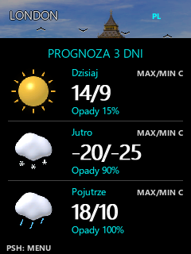
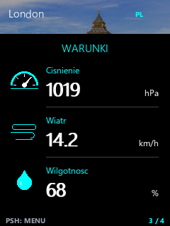
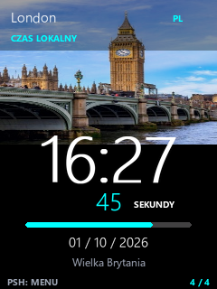
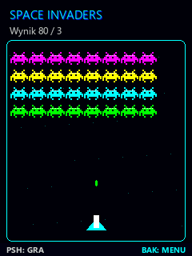
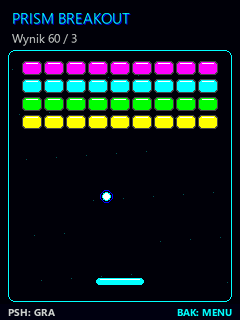

Online weather
Wi-Fi data from Open-Meteo: temperature, forecast, precipitation, pressure, wind and humidity. No API key required.
Weather on your desk. Classic games at your fingertips. A custom portrait-display station with animated weather and rotary control, housed in an angled 3D-printable enclosure.


A London photograph fills the upper half of the main view, with a large weather icon and temperature in the foreground. Separate pages show a three-day forecast, pressure with wind and humidity, and the local clock. A black background and bright digits keep the display clear.



Wi-Fi data from Open-Meteo: temperature, forecast, precipitation, pressure, wind and humidity. No API key required.
Slow clouds, birds above London, sun rays, raindrops and snowflakes. Effects follow the weather condition code.
London, Warsaw, Madrid or New York. Selection changes the weather, photograph and time zone. Language and country settings persist after a restart.
The rotary encoder selects games and controls play. A press starts, pauses or resumes the action; a separate button returns to the menu. In games, the city background gives way to the playfield.


The menu also includes Snake, Lucky Reels and a Lotto 6/59 number generator. Lotto generates numbers; it does not retrieve draw results.
The gallery shows software previews, not photographs of the display. Game scenes remain intact when paused or after losing.
| Part | Quantity | Purpose |
|---|---|---|
| ESP32-C3 Super Mini | 1 | Controller, Wi-Fi and game logic |
| TFT ILI9341 · SPI · 240 × 320 | 1 | 56 × 89 mm PCB; 45 × 60 mm portrait screen |
| Enkoder obrotowy / Rotary encoder | 1 | Rotary control with SW push switch; Ø10 mm enclosure hole |
| Przycisk BAK / BAK button | 1 | Return to menu, switches to GND |
| 18650 + koszyk / holder | 1 + 1 | Enclosure bay: 25 × 82 × 22 mm |
| Przewody, USB, wkręty / Wires, USB, screws | — | Connections and body/clip assembly |
| SM5308 USB-C / USB-A · 1S | 1 | Likely module used; the listing describes 5 V / 2 A output. Exact board to be confirmed. |
The enclosure follows the supplied TFT dimensions. Print the fit-test panel first. SM5308 is a provisional identification; verify markings, size and board revision on the actual module.
Logical wiring for the USB-powered version. GPIO labels match the source; the drawing does not represent the physical board pin positions. All signals use 3.3 V logic.

| TFT ILI9341 | ESP32-C3 | Controls |
|---|---|---|
| CS | GPIO10 | A / CLK → GPIO0 |
| RESET / RST | GPIO5 | B / DT → GPIO1 |
| DC / RS | GPIO4 | SW / PSH → GPIO9 |
| SDI / MOSI | GPIO7 | BAK → GPIO8 |
| SCK / CLK | GPIO6 | COM → GND |
| SDO / MISO | GPIO2 | VCC → 3V3 (module) |
| VCC + LED | 3V3 | SW & BAK → GND |
| GND | GND | INPUT_PULLUP |
If the TFT has no SDO, MISO can remain unconnected. SD card and touch are not used. VCC and LED reflect the 3.3 V module specified for this build; check your own module markings. GPIO2, GPIO8 and GPIO9 are boot strapping pins: release SW and BAK during power-up and reset.
Battery option: connect the 18650 holder to the SM5308 BAT input, then its 5 V USB-A output to the ESP32-C3 USB port. The module USB-C input is for charging. This section is provisional: confirm labels and polarity on your actual board before connecting. The cell does not connect directly to 3V3.

The wedge body stands on a flat base. A 15° backward tilt, screen bezel, recessed panel, side grooves and a centered knob give the build a composed finish. The rear cover provides access to the electronics and 18650 holder.
The pack includes the body, rear cover, a clip to print four times, fit-test panel and parametric source. The screen and metal knob shown in the preview are illustrative.
The STL meshes were checked for watertightness, connected solids and cover interference. A physical test print has not yet been made. Check holder fit, active-screen position and USB access against your own parts.
Complete Arduino sketch with artwork, games and a PL/EN build guide. Enter your own Wi-Fi name and password.
Download code ZIP ↓ESP32-C3 · 4 MB flash · Huge APP · no PSRAM
Four STL models, assembly instructions, dimensions and parametric source.
Download STL ZIP ↓Print the fit-test panel first.
Install the Espressif ESP32 board package, Adafruit GFX, Adafruit ILI9341, Adafruit BusIO and ArduinoJson 7.
Open KoraWeatherWOW55.ino with every .h file beside it. Enter Wi-Fi details. Select ESP32C3 Dev Module, 4 MB, Huge APP and USB CDC On Boot: Enabled.
Wire using the table and check weather and games. Print the fit panel, then the body and four clips. The package guide covers print orientation and screws.
Version 5.5 compiled for ESP32-C3: 71% flash, 12% static RAM. Previews and geometry were checked in software; appearance, performance and fit must be verified on the device.

A YouTube demonstration will appear here, showing weather, controls and games on the real device.